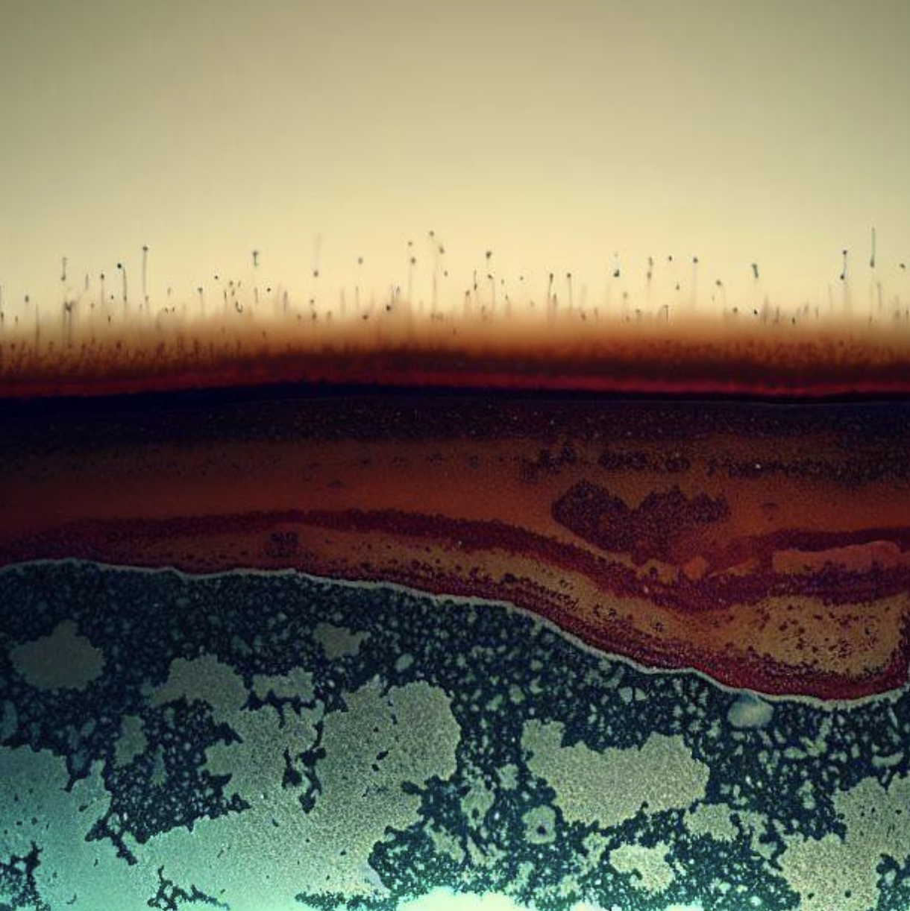

Rivers in the arctic have layers of permafrost beneath them, which change their flow dynamics. We see that floods happen relatively quickly when it starts to rain and quite intensely. This is because rainwater cannot get stored in deep layers below the surface. This has significant consequences for communities living and relying on periglacial water. We investigate the characteristics of what is modulating this flow.
Current Research
-
 Characterizing long and short term drivers of periglacial catchment hydrology.
Characterizing long and short term drivers of periglacial catchment hydrology.
Photo: Kuparuk River, Alaska
-
 Heat waves may introduce once frozen permafrost water into periglacial rivers.
Photo: Artistic interpretation of a permafrost cross-section thawing with time